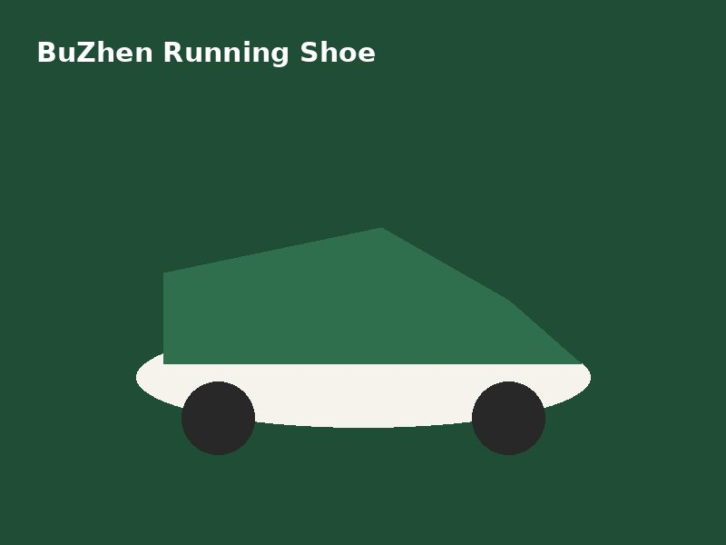
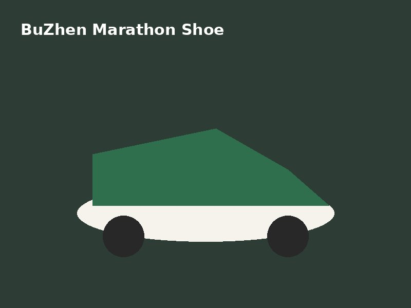

步真【跑步機能鞋】｜輕量慢跑鞋
NT$ 1,880 （多雙享【跑鞋批發價格】）
這雙【跑步機能鞋】是專為長距離設計的【慢跑鞋推薦】款式。鞋面採用透氣網布， 搭配高回彈中底，無論是日常路跑或【馬拉松鞋】需求都能勝任。單腳僅約 210 克， 是名副其實的【輕量跑鞋】，久跑也不易疲勞。
產品特色
- 【透氣跑鞋】鞋面：3D 飛織網布，排濕快乾
- 【防滑跑鞋】大底：橡膠顆粒紋路，濕地止滑
- 【寬楦跑鞋】楦頭：前掌加寬，腳掌寬也好穿
- 【回彈中底】：長距離支撐，吸震不踩硬
適合對象
初次入門想找【運動鞋推薦】的新手、追求成績的進階跑者，以及需要【跑鞋客製化】 配色的路跑社團。無論你要的是【小資跑鞋】還是【高階馬拉松鞋】，都能在這裡找到。
購買與配送
支援【跑鞋批發】團購、企業採購與【跑鞋客製化】刻字。全台【跑鞋宅配到府】， 滿額免運，並提供尺寸諮詢，協助你挑到最合腳的【慢跑鞋】。
更多【跑步機能鞋】實著參考
